<title>Aster Brand Options</title>
<meta name="claude:viewport-fit-sides" content="cover">
<style>
/* Layout: a contact sheet. Two columns of 1200 x 630 stills, each numbered so one can be named. */
:root {
  --bg: #14100d; --fg: #efe6d8; --muted: #b5a998; --line: #33291f; --accent: #e9c98f; --card: #1c1612;
  --serif: "Iowan Old Style", "Palatino Linotype", Palatino, Georgia, serif;
  --sans: system-ui, -apple-system, "Segoe UI", Roboto, sans-serif;
  color-scheme: dark;
}
@media (prefers-color-scheme: light) { :root:not([data-theme="dark"]) { --bg: #f4ecdc; --fg: #1a1410; --muted: #6b5d4c; --line: #dccfb6; --accent: #8a5a1c; --card: #fbf6ea; color-scheme: light } }
:root[data-theme="light"] { --bg: #f4ecdc; --fg: #1a1410; --muted: #6b5d4c; --line: #dccfb6; --accent: #8a5a1c; --card: #fbf6ea; color-scheme: light }
* { box-sizing: border-box }
body { background: var(--bg); color: var(--fg); font: 15px/1.55 var(--sans); padding-block: 40px 80px;
  padding-left: max(16px, env(safe-area-inset-left, 0px)); padding-right: max(16px, env(safe-area-inset-right, 0px)) }
main { max-width: 1320px; margin: 0 auto; display: grid; gap: 40px }
.intro { display: grid; gap: 14px; max-width: 64ch }
.intro svg { height: 56px; width: auto; display: block; justify-self: start }
h1 { font: 400 clamp(32px, 5.4vw, 50px)/1.06 var(--serif); margin: 0; text-wrap: balance }
p { margin: 0; color: var(--muted) }
.sheet { display: grid; gap: 30px 22px; grid-template-columns: repeat(auto-fill, minmax(min(100%, 540px), 1fr)) }
.still { margin: 0; display: grid; gap: 10px; min-width: 0 }
.still img { display: block; width: 100%; height: auto; aspect-ratio: 1200 / 630; border-radius: 6px; background: var(--card) }
.still figcaption { display: flex; align-items: baseline; gap: 10px; flex-wrap: wrap }
.num { font: 600 13px/1 var(--sans); font-variant-numeric: tabular-nums; color: var(--accent); letter-spacing: .06em }
.still strong { font: 400 18px/1.2 var(--serif) }
.note { color: var(--muted); font-size: 13px; margin-left: auto }
.still em { flex-basis: 100%; font: italic 400 17px/1.3 var(--serif); color: var(--accent) }
</style>
<main>
<div class="intro">
<svg viewBox="0 0 1446 512" role="img" aria-label="Aster"><circle cx="256" cy="256" r="256" fill="#14100d"/><circle cx="256" cy="256" r="234" fill="none" stroke="#d9a04e" stroke-width="5" opacity=".6"/><g transform="rotate(0 256 256)"><path d="M256 256C338 178.48000000000002 321.6 109.12 256 52Z" fill="#d9a04e"/><path d="M256 256C174 178.48000000000002 190.39999999999998 109.12 256 52Z" fill="#6e4a24"/></g><g transform="rotate(45 256 256)"><path d="M256 256C338 178.48000000000002 321.6 109.12 256 52Z" fill="#d9a04e"/><path d="M256 256C174 178.48000000000002 190.39999999999998 109.12 256 52Z" fill="#6e4a24"/></g><g transform="rotate(90 256 256)"><path d="M256 256C338 178.48000000000002 321.6 109.12 256 52Z" fill="#d9a04e"/><path d="M256 256C174 178.48000000000002 190.39999999999998 109.12 256 52Z" fill="#6e4a24"/></g><g transform="rotate(135 256 256)"><path d="M256 256C338 178.48000000000002 321.6 109.12 256 52Z" fill="#d9a04e"/><path d="M256 256C174 178.48000000000002 190.39999999999998 109.12 256 52Z" fill="#6e4a24"/></g><g transform="rotate(180 256 256)"><path d="M256 256C338 178.48000000000002 321.6 109.12 256 52Z" fill="#d9a04e"/><path d="M256 256C174 178.48000000000002 190.39999999999998 109.12 256 52Z" fill="#6e4a24"/></g><g transform="rotate(225 256 256)"><path d="M256 256C338 178.48000000000002 321.6 109.12 256 52Z" fill="#d9a04e"/><path d="M256 256C174 178.48000000000002 190.39999999999998 109.12 256 52Z" fill="#6e4a24"/></g><g transform="rotate(270 256 256)"><path d="M256 256C338 178.48000000000002 321.6 109.12 256 52Z" fill="#d9a04e"/><path d="M256 256C174 178.48000000000002 190.39999999999998 109.12 256 52Z" fill="#6e4a24"/></g><g transform="rotate(315 256 256)"><path d="M256 256C338 178.48000000000002 321.6 109.12 256 52Z" fill="#d9a04e"/><path d="M256 256C174 178.48000000000002 190.39999999999998 109.12 256 52Z" fill="#6e4a24"/></g><path d="M747.4 169.1 709.6 268Q712.7 268 718.7 268.2Q737.3 268.7 744.1 268.7Q752.4 268.7 774.1 268.2Q778.9 268 781.3 268ZM740 138H768.4Q789.9 203.7 809.2 257.9Q828.5 312.1 839.6 339.4Q846.2 355.1 851 358.8Q855.8 362.4 864.7 362.4H868V374Q855.1 373.3 844.4 373Q833.8 372.7 826.5 372.7Q817.2 372.7 806.1 373Q795.1 373.3 782.7 374V362.4H785.8Q797.5 362.4 801.8 359.7Q806.1 357 806.1 349.7Q806.1 347 805.5 343.8Q804.8 340.6 803.3 336.1L787.1 285.5Q780.8 285.5 769.9 285.4Q750.1 284.9 744.5 284.9Q733.2 284.9 723.2 284.9Q713.2 285 702.5 285.4Q690.7 315 686.4 328.5Q682.1 342.1 682.1 347.9Q682.1 356 686.4 359.2Q690.7 362.4 701.8 362.4H706.3V374Q694.2 373.3 683.7 373Q673.2 372.7 664.9 372.7Q658.3 372.7 648.4 373Q638.4 373.3 626.9 374V362.6Q638.6 362.3 645.5 357.9Q652.3 353.5 657.5 343.2Q666.7 323.9 690.3 265.8Q713.9 207.6 740 138ZM998.8 213.7Q998.8 223.8 999.9 234.1Q1001 244.3 1003 254.8L990.4 256.7Q988.4 239.5 979.5 231.1Q970.5 222.7 954.5 222.7Q940.6 222.7 931.7 230.2Q922.7 237.7 922.7 249.3Q922.7 267.7 961.8 278.4Q968.6 280.2 972.2 281.2Q991.7 286.7 1000.7 296.8Q1009.7 306.9 1009.7 323.2Q1009.7 347.4 990.8 363.1Q971.9 378.8 942.3 378.8Q931.5 378.8 920.3 376.5Q909 374.2 897.3 369.5Q897.4 367.9 897.5 366.1Q897.6 364.2 897.6 360.4Q897.6 352.8 896.7 344Q895.8 335.1 894 325.2L906.4 322.2Q909 342.7 919.3 352.9Q929.5 363.1 947.7 363.1Q964.3 363.1 974.8 355.1Q985.3 347 985.3 334.3Q985.3 316.4 950.2 305.9Q946.7 304.7 945.1 304.2Q919.9 296.6 909.8 285.5Q899.6 274.4 899.6 256.1Q899.6 234.9 916.5 220.9Q933.3 207 959.6 207Q967.7 207 977.2 208.6Q986.7 210.3 998.8 213.7ZM1078.7 180.3 1089.6 183.6Q1088.6 192.7 1088 199.9Q1087.5 207.1 1087.3 214.1H1099Q1108.5 214.1 1118.2 213.8Q1128 213.6 1137.9 213.1L1133.9 231.1Q1123.3 230.3 1114 230Q1104.7 229.8 1095.4 229.8H1087.6Q1086.6 258.2 1086.2 273.4Q1085.8 288.5 1085.8 298.4Q1085.8 335.8 1090.9 347.1Q1096.1 358.5 1109.3 358.5Q1114.7 358.5 1121.4 356.1Q1128.1 353.8 1137.7 348.5L1143.2 359.4Q1127.3 369 1114.4 373.9Q1101.5 378.8 1091.9 378.8Q1074.2 378.8 1066.1 366.6Q1058 354.5 1058 327.5Q1058 322.2 1058.8 289.7Q1059.5 257.2 1059.5 230.1Q1058 230.1 1055.2 230.3Q1041.5 230.8 1036.4 230.8V218.9Q1052.6 216.6 1063.2 206.9Q1073.7 197.2 1078.7 180.3ZM1302.3 281.6H1221.6Q1212.2 281.6 1204.2 281.9Q1196.3 282.2 1189.5 282.9V289Q1189.5 321.4 1204.5 339.1Q1219.4 356.8 1246.7 356.8Q1258.8 356.8 1270.5 352.7Q1282.3 348.7 1295.5 340.1L1302 350.7Q1284.9 364.6 1268 371.7Q1251 378.8 1234.5 378.8Q1202.4 378.8 1181.6 355.9Q1160.7 333 1160.7 297.1Q1160.7 258.9 1182.6 232.9Q1204.4 207 1235.8 207Q1265.1 207 1282.4 226.5Q1299.8 246 1302.3 281.6ZM1271.7 264.2Q1266.7 243.8 1256.6 233Q1246.6 222.2 1232.5 222.2Q1216.6 222.2 1205.3 234.9Q1194 247.6 1190.5 269.3Q1223.2 269.3 1242 268.2Q1260.8 267 1271.7 264.2ZM1375.7 205Q1374.6 216.2 1373.9 227.7Q1373.2 239.2 1372.9 252.1Q1386.3 228.5 1397.6 218Q1409 207.6 1421 207.6Q1430.5 207.6 1435.9 212.7Q1441.4 217.7 1441.4 226.3Q1441.4 232.4 1437.8 236.8Q1434.3 241.2 1429.5 241.2Q1426.5 241.2 1420.3 238Q1414.1 234.7 1409.6 234.7Q1401 234.7 1392.4 242.3Q1383.8 249.8 1374.4 265.7V283.9Q1374.4 310.3 1374.8 326.8Q1375.2 343.2 1376.1 347.7Q1377.5 356.1 1382.4 359.3Q1387.3 362.4 1399 362.4H1403.8V374Q1390.9 373 1380.8 372.5Q1370.8 372 1363.8 372Q1354.2 372 1344.1 372.5Q1333.9 373 1322.8 374V362.4H1326.6Q1338.7 362.4 1343 356.6Q1347.3 350.8 1347.3 329.7V312.3V258.6Q1347.3 240.7 1344.8 235.6Q1342.3 230.4 1335.7 230.4Q1334.4 230.4 1332.9 230.5Q1331.4 230.6 1327.9 231.1L1325.9 220.9Q1337.7 218.2 1350.1 214.2Q1362.5 210.3 1375.7 205Z" fill="currentColor"/></svg>
<h1>Twenty desert stills, twenty taglines</h1>
<p>Open desert with a mountain behind, and no town or oasis in frame. Every still carries a different candidate tagline, repeated under it. Stills and taglines are independent, so reply with the numbers of each that you like.</p>
</div>
<div class="sheet">
<figure class="still">
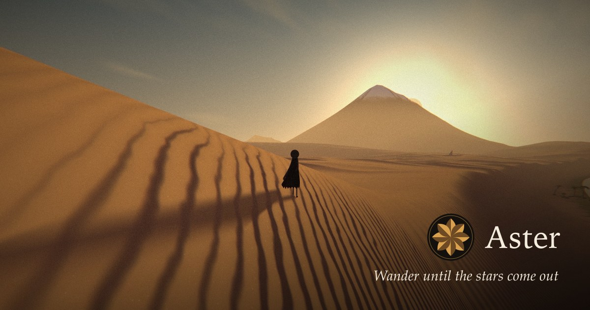
<figcaption><span class="num">01</span><strong>The sun behind the peak</strong><span class="note">Golden hour</span><em>Wander until the stars come out</em></figcaption>
</figure>
<figure class="still">
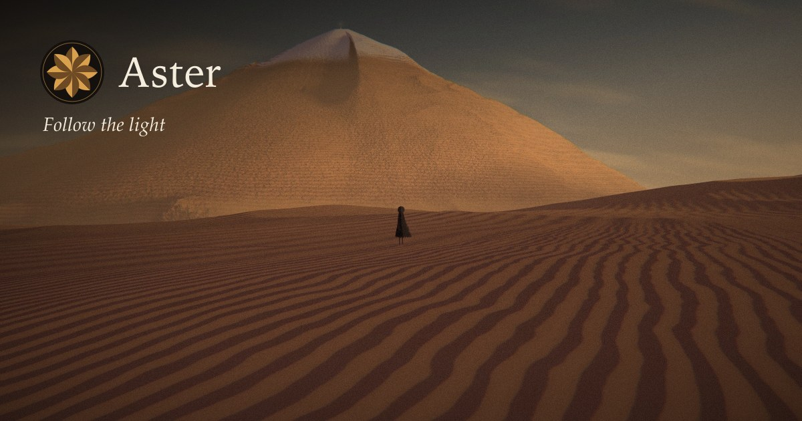
<figcaption><span class="num">02</span><strong>First light</strong><span class="note">Sunrise on the ripples</span><em>Follow the light</em></figcaption>
</figure>
<figure class="still">
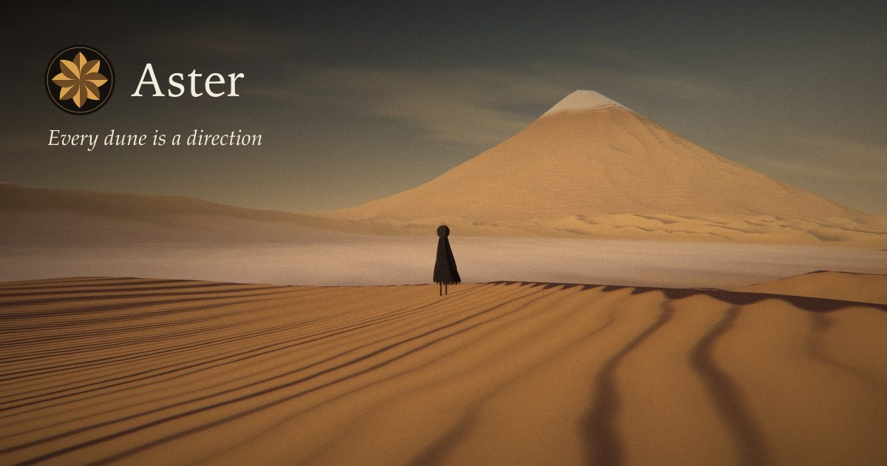
<figcaption><span class="num">03</span><strong>Long shadows</strong><span class="note">Late afternoon</span><em>Every dune is a direction</em></figcaption>
</figure>
<figure class="still">
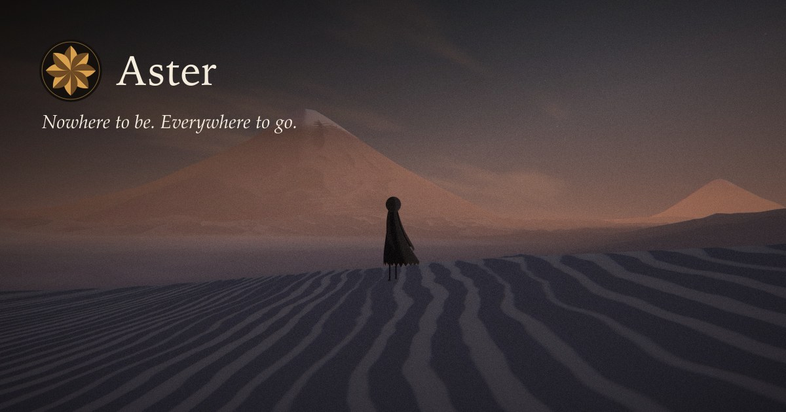
<figcaption><span class="num">04</span><strong>After sunset</strong><span class="note">Dusk</span><em>Nowhere to be. Everywhere to go.</em></figcaption>
</figure>
<figure class="still">
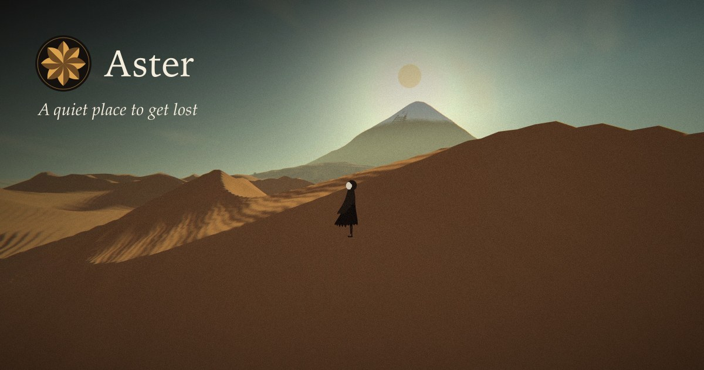
<figcaption><span class="num">05</span><strong>Over the dunes</strong><span class="note">The sun above the summit</span><em>A quiet place to get lost</em></figcaption>
</figure>
<figure class="still">
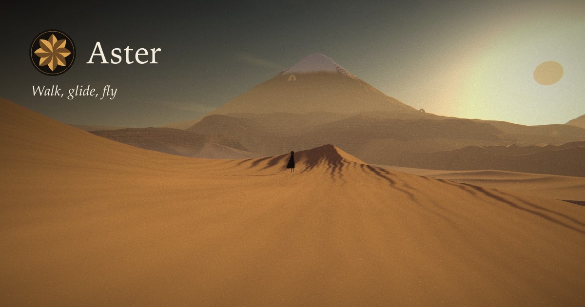
<figcaption><span class="num">06</span><strong>The far range</strong><span class="note">Golden hour</span><em>Walk, glide, fly</em></figcaption>
</figure>
<figure class="still">
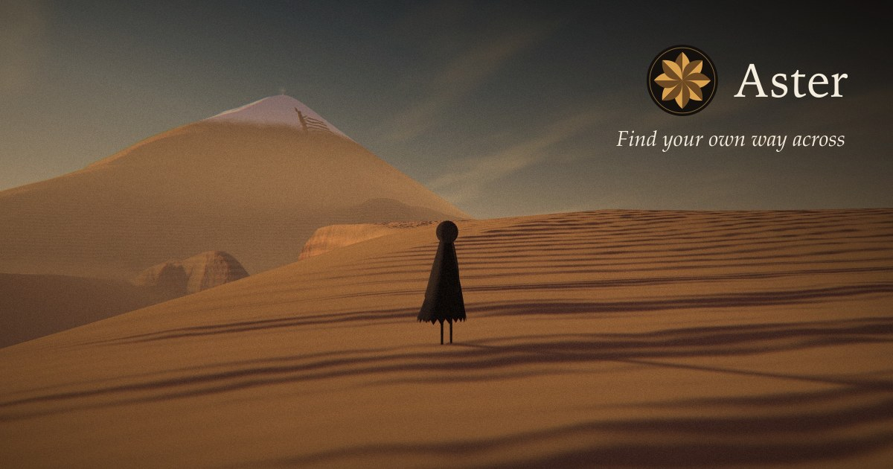
<figcaption><span class="num">07</span><strong>At the foot of it</strong><span class="note">Golden hour, from low down</span><em>Find your own way across</em></figcaption>
</figure>
<figure class="still">
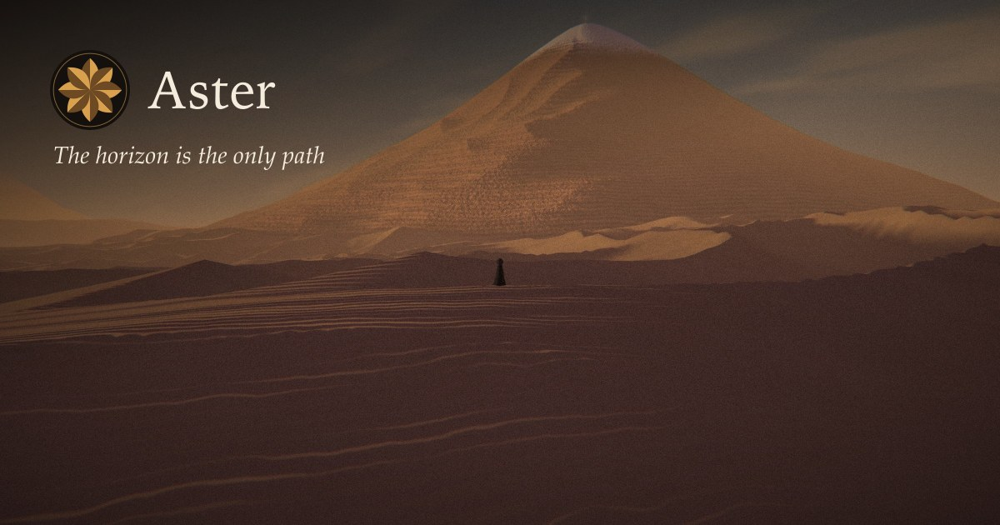
<figcaption><span class="num">08</span><strong>A small figure</strong><span class="note">Dusk</span><em>The horizon is the only path</em></figcaption>
</figure>
<figure class="still">
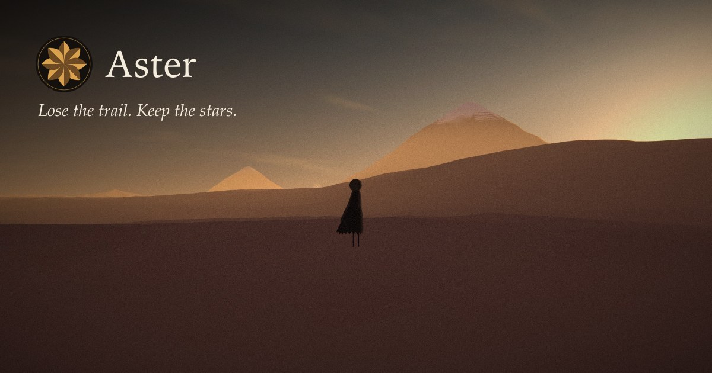
<figcaption><span class="num">09</span><strong>Last light</strong><span class="note">Sunset</span><em>Lose the trail. Keep the stars.</em></figcaption>
</figure>
<figure class="still">
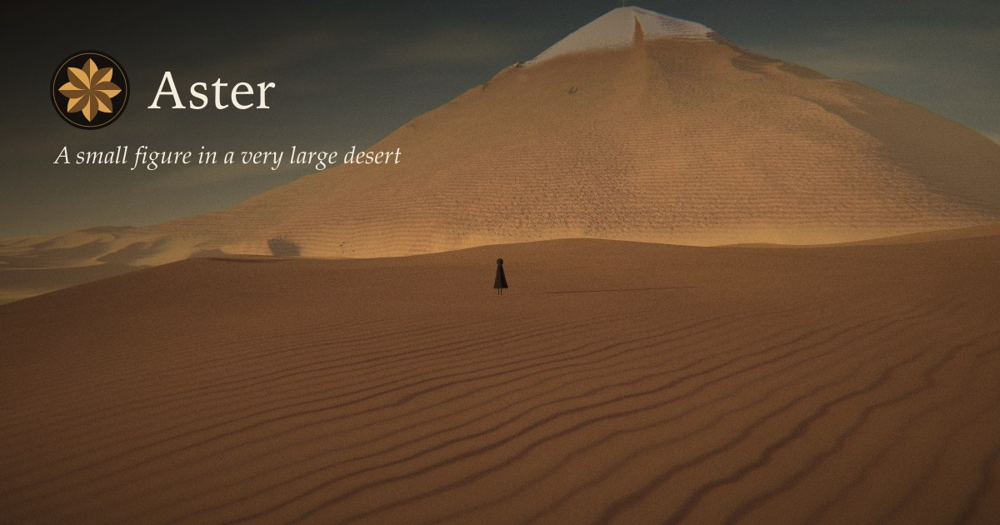
<figcaption><span class="num">10</span><strong>The climb ahead</strong><span class="note">Afternoon</span><em>A small figure in a very large desert</em></figcaption>
</figure>
<figure class="still">
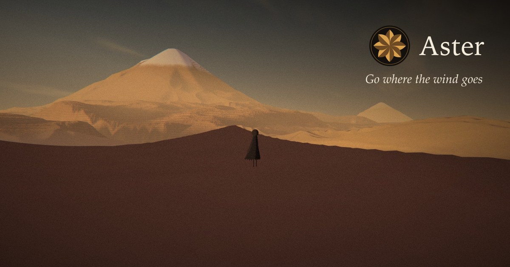
<figcaption><span class="num">11</span><strong>Dawn on the ridge</strong><span class="note">Sunrise</span><em>Go where the wind goes</em></figcaption>
</figure>
<figure class="still">
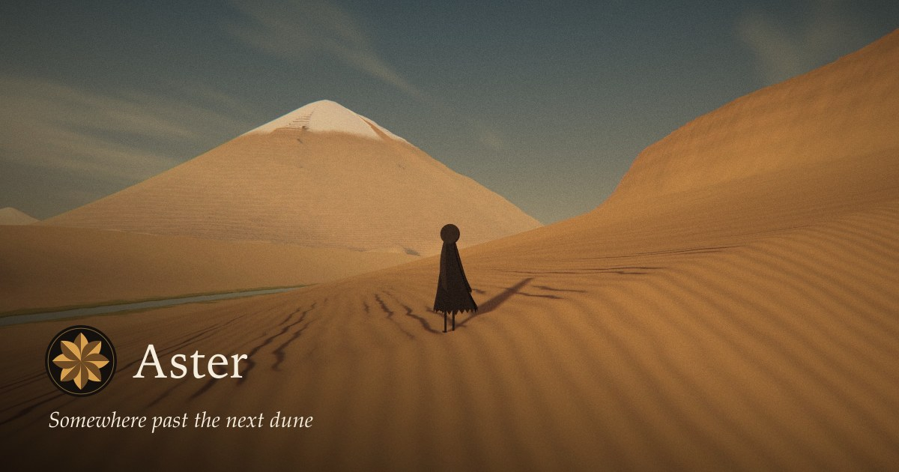
<figcaption><span class="num">12</span><strong>Between the dunes</strong><span class="note">Golden hour</span><em>Somewhere past the next dune</em></figcaption>
</figure>
<figure class="still">
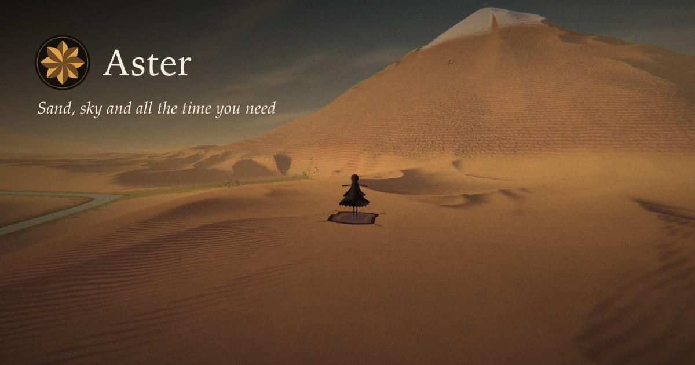
<figcaption><span class="num">13</span><strong>Towards the mountain</strong><span class="note">On the carpet at golden hour</span><em>Sand, sky and all the time you need</em></figcaption>
</figure>
<figure class="still">
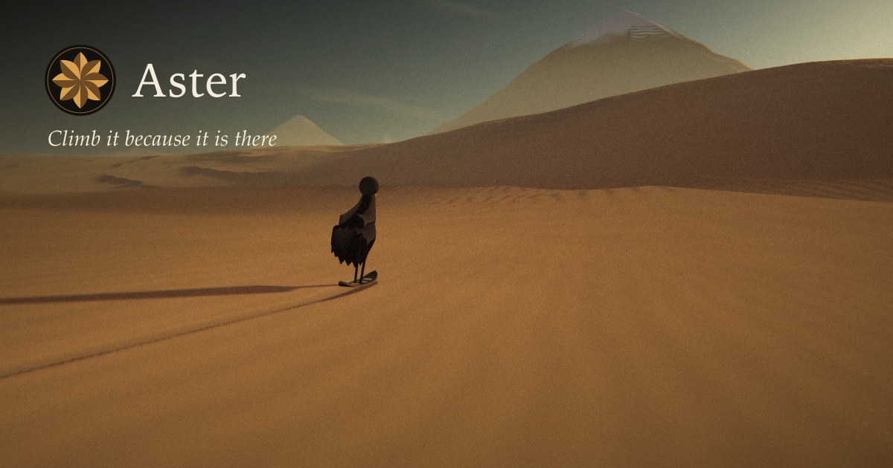
<figcaption><span class="num">14</span><strong>Riding out</strong><span class="note">On the board, late afternoon</span><em>Climb it because it is there</em></figcaption>
</figure>
<figure class="still">
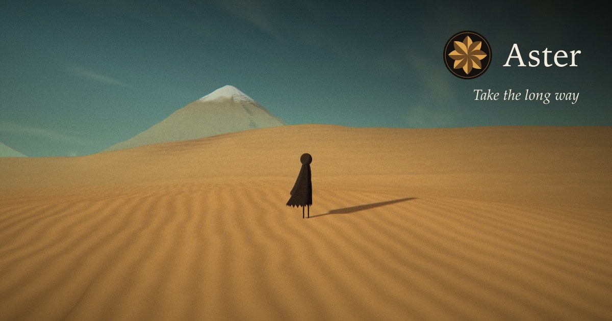
<figcaption><span class="num">15</span><strong>Morning</strong><span class="note">Teal sky and a snow cap</span><em>Take the long way</em></figcaption>
</figure>
<figure class="still">
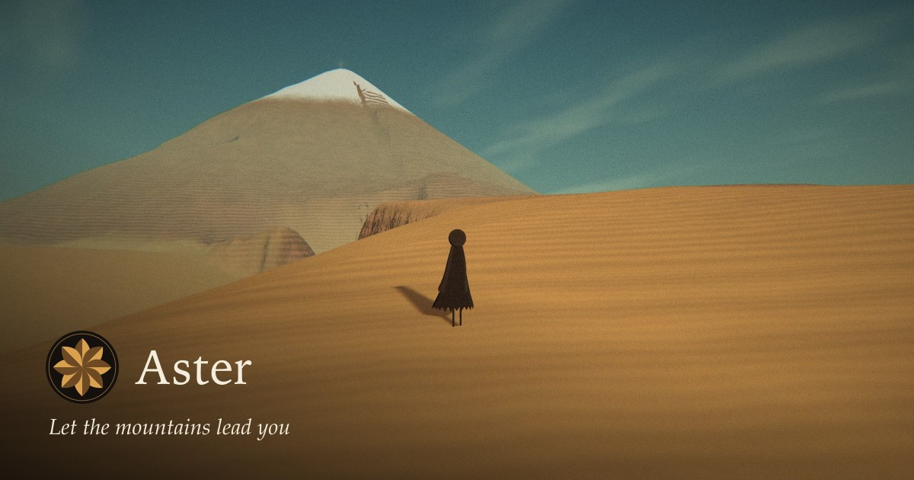
<figcaption><span class="num">16</span><strong>Open sand</strong><span class="note">Morning light</span><em>Let the mountains lead you</em></figcaption>
</figure>
<figure class="still">
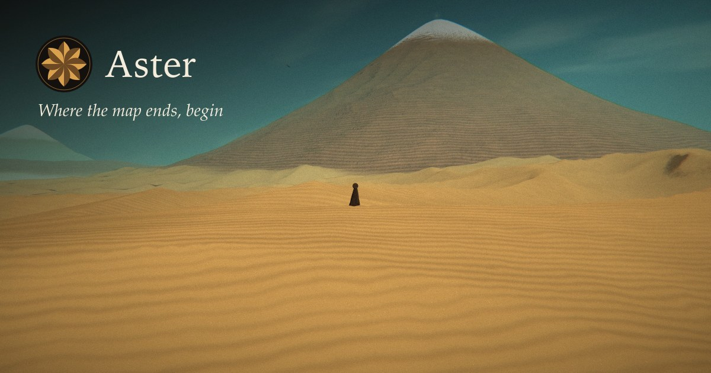
<figcaption><span class="num">17</span><strong>The giant</strong><span class="note">Morning</span><em>Where the map ends, begin</em></figcaption>
</figure>
<figure class="still">
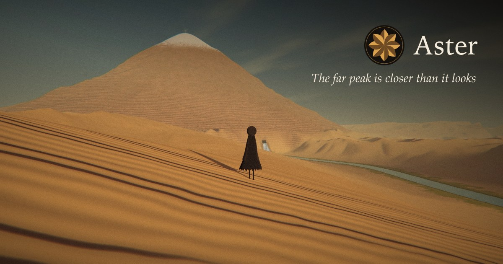
<figcaption><span class="num">18</span><strong>The river below</strong><span class="note">Golden hour</span><em>The far peak is closer than it looks</em></figcaption>
</figure>
<figure class="still">
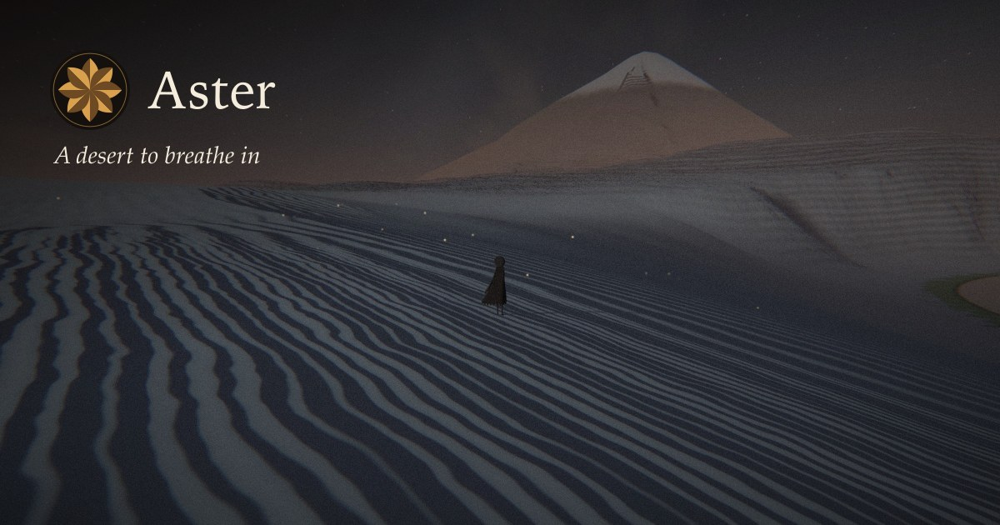
<figcaption><span class="num">19</span><strong>Night ripples</strong><span class="note">Moonlight</span><em>A desert to breathe in</em></figcaption>
</figure>
<figure class="still">
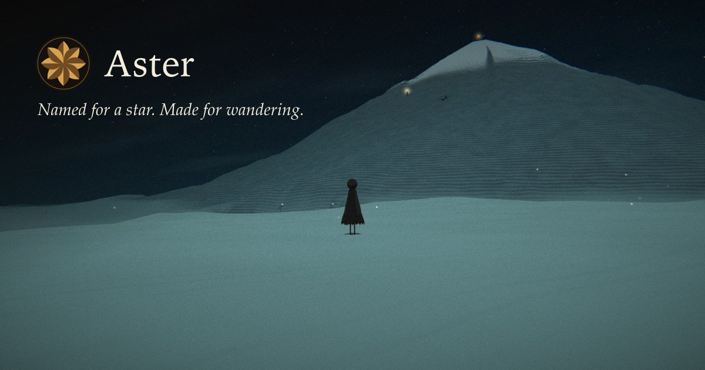
<figcaption><span class="num">20</span><strong>Lanterns on the summit</strong><span class="note">Night</span><em>Named for a star. Made for wandering.</em></figcaption>
</figure>
</div>
</main>
